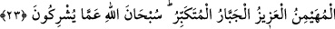

23. O, öyle Allah’tır ki, kendisinden başka hiçbir tanrı yoktur. O, mülkün
sâhibidir, eksiklikten münezzehtir, selâmet verendir, emniyete kavuşturandır,
gözetip koruyandır, üstündür, istediğini zorla yaptırandır, büyüklükte eşi
olmayandır. Allah, müşriklerin ortak koştukları şeylerden münezzehtir.
“O, öyle Allah’tır ki, kendisinden başka hiçbir tanrı yoktur.” Bu âyet-i kerimede de
tevhide verilen önemi belirtmek için “Hüve” zamiri tekrar edilmiştir. Yâni O’ndan
başka ibâdete lâyık hiçbir bir ilah yoktur. O öyle bir padişahtır ki celâl olan zâtı, muhtaç
olmaktan münezzeh, kemâl olan sıfatları mutlak istiğnayla müstağnîdir.
“O, mülkün sâhibidir.” Melik, hükümranlık ve saltanat sâhibi, demektir. Mülk, emir
ve yasaklarla akıllı topluluklara tasarruf etmektir. Bu tasarruf, düşünüp konuşabilen
varlıklara mahsus olan yönetimlerde geçerli olan bir tasarruftur. Bu sebeple, Melikü’n-
nas/insanların meliki denir de Melikü’l-eşya/eşyanın meliki denmez. Bundan dolayı
“Din gününün mâliki” (el-Fatiha, 1/4) anlamındaki âyet-i kerimenin anlamı, “Din
günündeki mâlik” demektir. Müfredat adlı eserde de böyle kaydedilmiştir. Abdülmelik
demekten maksad, Allah’ın dilediğiyle tasarruf ederek kendi nefsine ve diğerlerine
mâlik olan ve Allah’ın dilediğiyle emreden demektir. Böyle biri, Allah’ın yaratılmışlar
üzerindeki en ağır ve en ciddi kimsesidir.
İmam Gazzali (k.s.) şöyle demiştir: Kulun kendisine âid ülkesi, kalbi ve kalıbıdır.
Ordusu; şehveti, hevesi ve gadabıdır. Emrindeki raiyyesi ve yönettiği halkı; lisanı, iki
gözü ve iki eliyle diğer organlarıdır. Kul bunlara sâhib olup onların emrine girmediği
zaman hükümranlığı, bir melikin kendi halkını yönetmesi seviyesine ulaşmış olur.
Şeyh Sa‘dî (r.a.) şöyle demiştir:
Senin vücûdun iyi ve kötü ile dolu bir şehirdir,
Sen onun sultanısın, akıl da bilge veziri.
Bu şehirde başıboş alçaklar vardır,
Bunlar kibir, sevdâ ve hırstır.
Sultan kötülere meyl ü muhabbet ederse,
Akıllı insanlarda rahat ve huzur nasıl kalır?
Bir de onun başarılı yönetimine insanların hiç birine muhtaç olmaması, aksine
insanların ona uzun ve kısa vadede ihtiyaç duyması eklenecek olursa o alem-i ‘arzda
melik sayılır. Bu, peygamberlerin rütbesidir. Çünkü onlar, âhiret hayatını mamur
etmenin yolunu bulmakla Allah’tan başka her şeyden müstağni olur, hiç kimseye ihtiyaç
duymazlar, aksine herkes onlara muhtaç olur. Bu sultanlıkta peygamberleri, vârisleri
olan âlimler takib ederler. Âlimlerin saltanatları, Allah’ın kullarını irşad etmeğe ve
aydınlatmağa güçleri yettiği ve kendileri irşada muhtaç olmaktan uzak bulundukları
kadardır. Bu saltanat, kula mülkünde ve gerçek saltanatında ortağı bulunmayan gerçek